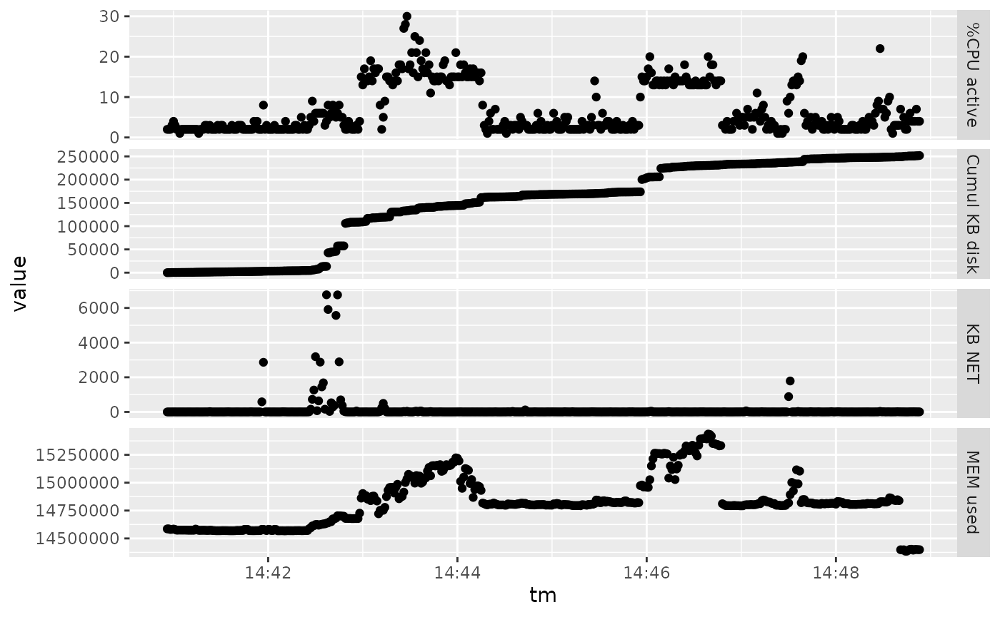

vignettes/Rcollectl.Rmd
Rcollectl.RmdRcollectl
R is an open-source statistical environment which can be easily modified to enhance its functionality via packages. Rcollectl is a R package available via github at vjcitn/Rcollectl.
if (!requireNamespace("BiocManager", quietly = TRUE)) {
install.packages("BiocManager")
}
BiocManager::install("vjcitn/Rcollectl")
## Check that you have a valid Bioconductor installation
BiocManager::valid()Rcollectl
We hope that Rcollectl will be useful for your research. Please use the following information to cite the package and the overall approach. Thank you!
## Citation info
citation("Rcollectl")
#>
#> To cite package 'Rcollectl' in publications use:
#>
#> Vincent Carey (2020). Rcollectl: What the Package Does (One Line,
#> Title Case). R package version 0.0.11.
#> https://github.com/vjcitn/Rcollectl
#>
#> A BibTeX entry for LaTeX users is
#>
#> @Manual{,
#> title = {Rcollectl: What the Package Does (One Line, Title Case)},
#> author = {Vincent Carey},
#> year = {2020},
#> note = {R package version 0.0.11},
#> url = {https://github.com/vjcitn/Rcollectl},
#> }Rcollectl
Collectl will perform measurements on system resource consumption of various types. We provide a demonstration output with the package:
lk = cl_parse(system.file("demotab/demo_1123.tab.gz", package="Rcollectl"))
dim(lk)
#> [1] 478 71
attr(lk, "meta")
#> [1] "################################################################################"
#> [2] "# Collectl: V4.3.1-1 HiRes: 1 Options: -scdnm -P -f./col2.txt "
#> [3] "# Host: stvjc-XPS-13-9300 DaemonOpts: "
#> [4] "# Booted: 1606052236.57 [20201122-08:37:16]"
#> [5] "# Distro: debian bullseye/sid, Ubuntu 20.04.1 LTS Platform: "
#> [6] "# Date: 20201123-144054 Secs: 1606160454 TZ: -0500"
#> [7] "# SubSys: cdnm Options: Interval: 1 NumCPUs: 8 [HYPER] NumBud: 0 Flags: i"
#> [8] "# Filters: NfsFilt: EnvFilt: TcpFilt: ituc"
#> [9] "# HZ: 100 Arch: x86_64-linux-gnu-thread-multi PageSize: 4096"
#> [10] "# Cpu: GenuineIntel Speed(MHz): 1745.513 Cores: 4 Siblings: 8 Nodes: 1"
#> [11] "# Kernel: 5.4.0-54-generic Memory: 15969160 kB Swap: 2097148 kB"
#> [12] "# NumDisks: 1 DiskNames: nvme0n1"
#> [13] "# NumNets: 4 NetNames: lo:?? enxc03ebaccccfd:100 docker0:?? wlp0s20f3:??"
#> [14] "################################################################################"
lk[1:5,1:5]
#> #Date Time CPU_User% CPU_Nice% CPU_Sys%
#> 1 20201123 14:40:56 2 0 1
#> 2 20201123 14:40:57 1 0 0
#> 3 20201123 14:40:58 1 0 0
#> 4 20201123 14:40:59 2 0 0
#> 5 20201123 14:41:00 3 0 1Essentially, collectl will generate files like the .tab.gz referenced above. cl_parse can ingest this information, retaining metadata about the invocation, into an R object (in this case, a data.frame instance with an extra attribute). We will analyze the resource consumption using the table. A simple visualization will help fix concepts:
plot_usage(lk)
From this display, we can see that about a burst of network activity around 14:43 is followed by consumption of CPU, memory, and disk resources. The % CPU active never exceeds 30, memory consumption started relatively high when sampling began, growing to about 15.5 GB. and 250MB were written to disk over the entire interval.
The Rcollectl package (Carey, 2020) was made possible thanks to:
This package was developed using biocthis.
Code for creating the vignette
## Create the vignette
library("rmarkdown")
system.time(render("Rcollectl.Rmd", "BiocStyle::html_document"))
## Extract the R code
library("knitr")
knit("Rcollectl.Rmd", tangle = TRUE)
## Clean up
file.remove("Rcollectl.bib")
#> [1] TRUEDate the vignette was generated.
#> [1] "2021-01-03 12:16:56 EST"Wallclock time spent generating the vignette.
#> Time difference of 1.751 secsR session information.
#> ─ Session info ───────────────────────────────────────────────────────────────────────────────────────────────────────
#> setting value
#> version R version 4.0.2 Patched (2020-07-19 r78892)
#> os Ubuntu 20.04 LTS (fossa-melisa X20)
#> system x86_64, linux-gnu
#> ui X11
#> language (EN)
#> collate en_US.UTF-8
#> ctype en_US.UTF-8
#> tz America/New_York
#> date 2021-01-03
#>
#> ─ Packages ───────────────────────────────────────────────────────────────────────────────────────────────────────────
#> package * version date lib source
#> assertthat 0.2.1 2019-03-21 [2] CRAN (R 4.0.2)
#> BiocManager 1.30.10 2019-11-16 [2] CRAN (R 4.0.2)
#> BiocStyle * 2.18.1 2020-11-24 [2] Bioconductor
#> bookdown 0.21 2020-10-13 [2] CRAN (R 4.0.2)
#> cli 2.2.0 2020-11-20 [2] CRAN (R 4.0.2)
#> colorspace 2.0-0 2020-11-11 [2] CRAN (R 4.0.2)
#> crayon 1.3.4 2017-09-16 [2] CRAN (R 4.0.2)
#> desc 1.2.0 2018-05-01 [2] CRAN (R 4.0.2)
#> digest 0.6.27 2020-10-24 [2] CRAN (R 4.0.2)
#> dplyr 1.0.2 2020-08-18 [2] CRAN (R 4.0.2)
#> ellipsis 0.3.1 2020-05-15 [2] CRAN (R 4.0.2)
#> evaluate 0.14 2019-05-28 [2] CRAN (R 4.0.2)
#> fansi 0.4.1 2020-01-08 [2] CRAN (R 4.0.2)
#> farver 2.0.3 2020-01-16 [2] CRAN (R 4.0.2)
#> fs 1.5.0 2020-07-31 [2] CRAN (R 4.0.2)
#> generics 0.1.0 2020-10-31 [2] CRAN (R 4.0.2)
#> ggplot2 3.3.2 2020-06-19 [2] CRAN (R 4.0.2)
#> glue 1.4.2 2020-08-27 [2] CRAN (R 4.0.2)
#> gtable 0.3.0 2019-03-25 [2] CRAN (R 4.0.2)
#> htmltools 0.5.0 2020-06-16 [2] CRAN (R 4.0.2)
#> httr 1.4.2 2020-07-20 [2] CRAN (R 4.0.2)
#> jsonlite 1.7.2 2020-12-09 [2] CRAN (R 4.0.2)
#> knitcitations * 1.0.10 2019-09-15 [2] CRAN (R 4.0.2)
#> knitr 1.30 2020-09-22 [2] CRAN (R 4.0.2)
#> labeling 0.4.2 2020-10-20 [2] CRAN (R 4.0.2)
#> lifecycle 0.2.0 2020-03-06 [2] CRAN (R 4.0.2)
#> lubridate 1.7.9.2 2020-11-13 [2] CRAN (R 4.0.2)
#> magrittr 2.0.1 2020-11-17 [2] CRAN (R 4.0.2)
#> memoise 1.1.0 2017-04-21 [2] CRAN (R 4.0.2)
#> munsell 0.5.0 2018-06-12 [2] CRAN (R 4.0.2)
#> pillar 1.4.7 2020-11-20 [2] CRAN (R 4.0.2)
#> pkgconfig 2.0.3 2019-09-22 [2] CRAN (R 4.0.2)
#> pkgdown 1.6.1 2020-09-12 [2] CRAN (R 4.0.2)
#> plyr 1.8.6 2020-03-03 [2] CRAN (R 4.0.2)
#> processx 3.4.5 2020-11-30 [2] CRAN (R 4.0.2)
#> ps 1.5.0 2020-12-05 [2] CRAN (R 4.0.2)
#> purrr 0.3.4 2020-04-17 [2] CRAN (R 4.0.2)
#> R6 2.5.0 2020-10-28 [2] CRAN (R 4.0.2)
#> ragg 0.4.0 2020-10-05 [2] CRAN (R 4.0.2)
#> Rcollectl * 0.0.11 2021-01-03 [1] Bioconductor
#> Rcpp 1.0.5 2020-07-06 [2] CRAN (R 4.0.2)
#> RefManageR 1.3.0 2020-11-13 [2] CRAN (R 4.0.2)
#> rlang 0.4.9 2020-11-26 [2] CRAN (R 4.0.2)
#> rmarkdown 2.6 2020-12-14 [2] CRAN (R 4.0.2)
#> rprojroot 2.0.2 2020-11-15 [2] CRAN (R 4.0.2)
#> scales 1.1.1 2020-05-11 [2] CRAN (R 4.0.2)
#> sessioninfo * 1.1.1 2018-11-05 [2] CRAN (R 4.0.2)
#> stringi 1.5.3 2020-09-09 [2] CRAN (R 4.0.2)
#> stringr 1.4.0 2019-02-10 [2] CRAN (R 4.0.2)
#> systemfonts 0.3.2 2020-09-29 [2] CRAN (R 4.0.2)
#> textshaping 0.2.1 2020-11-13 [2] CRAN (R 4.0.2)
#> tibble 3.0.4 2020-10-12 [2] CRAN (R 4.0.2)
#> tidyselect 1.1.0 2020-05-11 [2] CRAN (R 4.0.2)
#> vctrs 0.3.6 2020-12-17 [2] CRAN (R 4.0.2)
#> withr 2.3.0 2020-09-22 [2] CRAN (R 4.0.2)
#> xfun 0.19 2020-10-30 [2] CRAN (R 4.0.2)
#> xml2 1.3.2 2020-04-23 [2] CRAN (R 4.0.2)
#> yaml 2.2.1 2020-02-01 [2] CRAN (R 4.0.2)
#>
#> [1] /tmp/RtmpPl3KHX/temp_libpath19c2e22a183e3
#> [2] /home/stvjc/R-4-0-dist/lib/R/libraryThis vignette was generated using BiocStyle (Oleś, Morgan, and Huber, 2020) with knitr (Xie, 2020) and rmarkdown (Allaire, Xie, McPherson, Luraschi, et al., 2020) running behind the scenes.
Citations made with knitcitations (Boettiger, 2019).
[1] J. Allaire, Y. Xie, J. McPherson, J. Luraschi, et al. rmarkdown: Dynamic Documents for R. R package version 2.6. 2020. <URL: https://github.com/rstudio/rmarkdown>.
[2] C. Boettiger. knitcitations: Citations for ‘Knitr’ Markdown Files. R package version 1.0.10. 2019. <URL: https://CRAN.R-project.org/package=knitcitations>.
[3] V. Carey. Rcollectl: What the Package Does (One Line, Title Case). R package version 0.0.11. 2020. <URL: https://github.com/vjcitn/Rcollectl>.
[4] G. Csárdi, R. core, H. Wickham, W. Chang, et al. sessioninfo: R Session Information. R package version 1.1.1. 2018. <URL: https://CRAN.R-project.org/package=sessioninfo>.
[5] A. Oleś, M. Morgan, and W. Huber. BiocStyle: Standard styles for vignettes and other Bioconductor documents. R package version 2.18.1. 2020. <URL: https://github.com/Bioconductor/BiocStyle>.
[6] R Core Team. R: A Language and Environment for Statistical Computing. R Foundation for Statistical Computing. Vienna, Austria, 2020. <URL: https://www.R-project.org/>.
[7] H. Wickham. “testthat: Get Started with Testing”. In: The R Journal 3 (2011), pp. 5-10. <URL: https://journal.r-project.org/archive/2011-1/RJournal_2011-1_Wickham.pdf>.
[8] Y. Xie. knitr: A General-Purpose Package for Dynamic Report Generation in R. R package version 1.30. 2020. <URL: https://yihui.org/knitr/>.